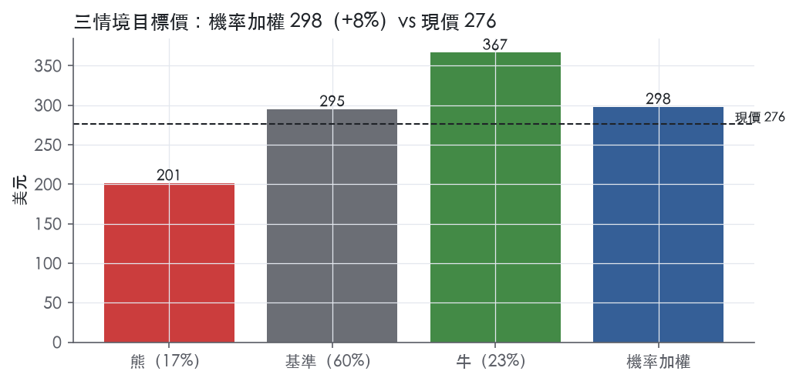
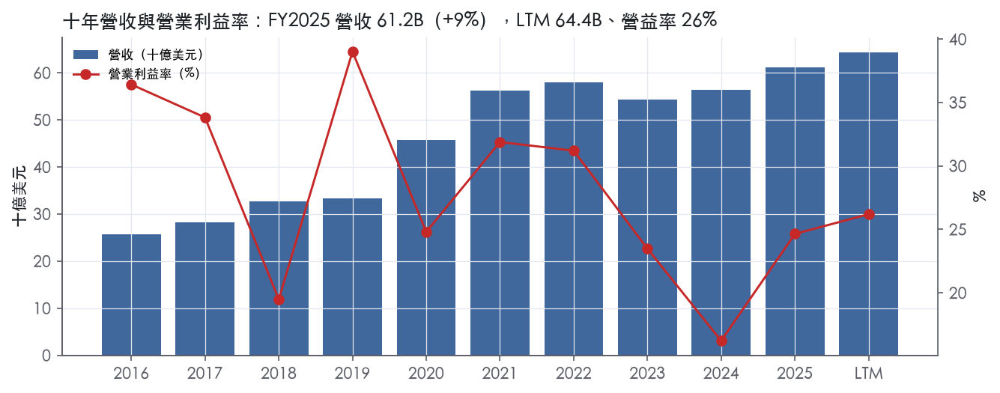
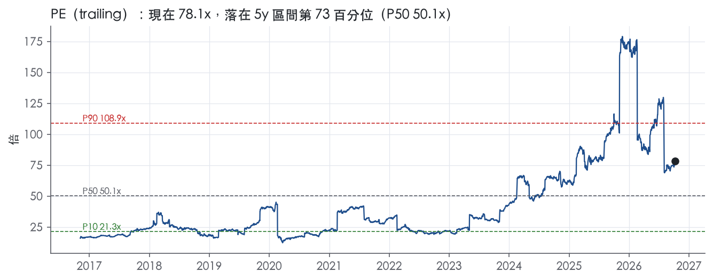
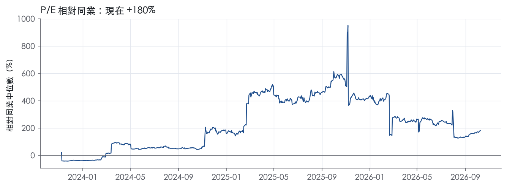
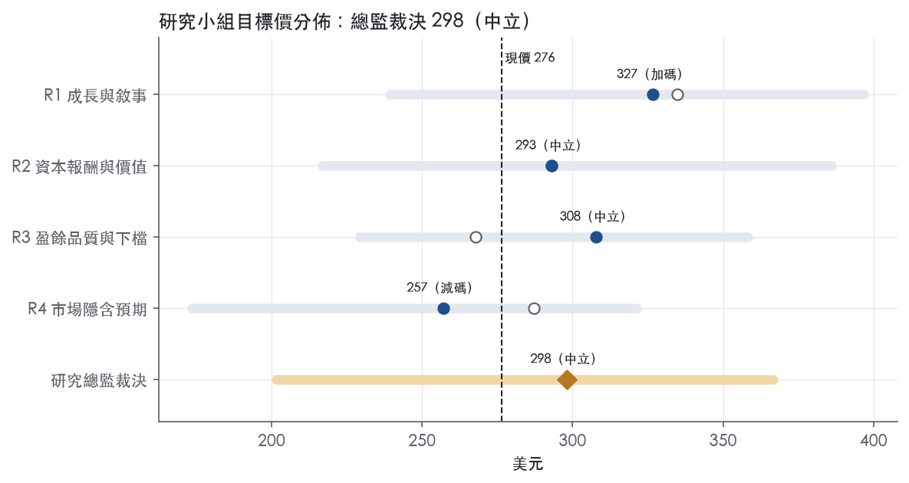
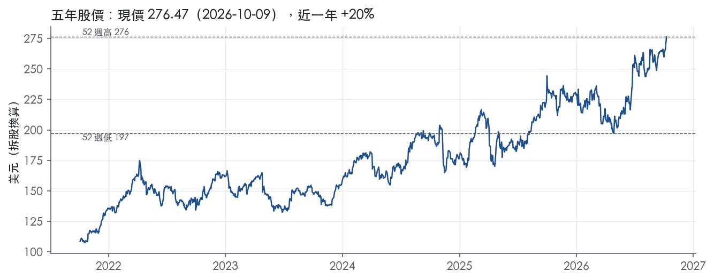

評等總表 › 醫療保健 › ABBV
倍數溫和收斂，報酬貼近門檻，中性｜評等 中立｜目標價 298
| 報告日 | 評等 | 目標價 | 當時股價 | 超額報酬 |
|---|---|---|---|---|
| 2026-10-09 | 中立 | 298 | 276 | +0.0% |
| 評等 | 中立 |
| 12 個月目標價 | 298 美元 |
| 現價 | 276.47 美元（2026-10-09） |
| 預期報酬 | 股價 +7.8%＋股息 2.5%＝總報酬 +10.3%；同業籃門檻 10.2%，超額 +0.0% |
| 估值方法 | P/E 35.0x，套在第 5–8 季的EPS（也就是一年後的未來四季） |
| 三情境 | 熊 201／基準 295／牛 367 |
| 研究流程 | 四位研究員兩輪辯論＋研究總監裁決 |
| 資料來源 | SEC EDGAR XBRL、Tiingo、FRED（全免費） |
倍數溫和收斂，報酬貼近門檻，中性（研究總監裁決，四位研究員兩輪辯論後）
評等 中立｜12 個月目標價 298 美元（總監三情境機率加權 296 與研究員中位數 300 各半）｜現價 276.47（2026-10-09）
預期報酬：股價 +7.8%＋股息 2.5%＝總報酬 +10.3%。同業籃門檻 10.2%，超額 +0.0%。
估值方法：P/E 35.0x，套在第 5–8 季的EPS（也就是一年後的未來四季）。三情境：熊 201（17%）／基準 295（60%）／牛 367（23%）。
什麼會讓研究總監改變看法：Rinvoq 未入 2027-02 議價名單且 2027 指引隱含營收成長達 10% 以上，我把倍數拉回市場持平、轉偏多；Apogee 以資產收購一次認列大額 IPR&D，或 Skyrizi/Rinvoq 任一季年增跌破 15%，我下修營益率與倍數、轉偏空。
| 過去四季（實際，FY2026Q2） | 未來四季 | 第 5–8 季 | 第 9–12 季 | |
|---|---|---|---|---|
| 營收（B） | 64.4B | 70.5B | 75.4B | 79.6B |
| 營收成長 | 10.4% | 9.5% | 7.0% | 5.5% |
| 營業利益率 | 26.2% | 28.0% | 28.0% | 27.5% |
| EPS（美元） | 3.54 | 7.79 | 8.43 | 8.78 |
| EPS 成長 | 68.6% | 120.1% | 8.2% | 4.2% |
| 每股股息（美元） | 6.83 | 6.83 | 6.83 | 6.83 |
| P/E（現價） | 78.1x | 35.5x | 32.8x | 31.5x |
| 股息殖利率（現價） | 2.5% | 2.5% | 2.5% | 2.5% |
過去四季為申報數字；預測為研究總監的假設、程式計算。倍數與殖利率都用現價計算，用來看現價對應各期獲利的高低。
| 情境 | 機率（歷史） | 故事 | 未來四季營收成長 | 第 5–8 季營益率 | 倍數 | 目標價 | 股價漲跌 |
|---|---|---|---|---|---|---|---|
| 熊 | 17%（15%） | 對應風險表第 1 條（Rinvoq 入選 2027-02 議價名單壓倍數）疊加第 2 條（競品讓占營收約 42% 的 Skyrizi/Rinvoq 降速，固定成本反向槓桿），倍數回到自家 10 年 trailing P/E P50 27.8x 附近 | 7.0% | 26.0% | 28.0x | 201 | -27.2% |
| 基準 | 60%（63%） | 免疫學抵銷 Humira 與 Vraylar/Linzess 議價，成長由兩位數降到高個位數，IPR&D 經常化，倍數由現價隱含水準溫和收斂 | 9.5% | 28.0% | 35.0x | 295 | 6.7% |
| 牛 | 23%（23%） | Skyrizi/Rinvoq 維持 20% 以上、Rinvoq 不在 2027-02 議價名單、2027 指引雙位數，市場繼續付現在對 NTM 的倍數；取 R4 牛情境並把 y1 營益率微調到 29% | 11.0% | 30.5% | 38.0x | 367 | 32.6% |
目標價由程式依研究總監的驅動與倍數計算；機率由研究總監給定。括號內是歷史頻率：把這檔股票過去十年 12 個月報酬的波動形狀，置中在基準情境，結果落在各情境附近的比例。

四位研究員用不同方法各自估值，回應研究總監的質疑後交出第二輪，最後由總監逐點裁決。各研究員的主張見第七章，裁決理由見第八章，完整論證見《研究底稿》。
| 立場（一輪→二輪） | 加權目標價（一輪→二輪） | 評等（一輪→二輪） | 第二輪倍數 | 熊～牛目標價 | |
|---|---|---|---|---|---|
| R1 成長與敘事 | 中性→看多 | 335→327 | 加碼→加碼 | 20.5x | 239～397 |
| R2 資本報酬與價值 | 看空→中性 | 293→293 | 中立→中立 | 18.5x | 217～386 |
| R3 盈餘品質與下檔 | 中性→中性 | 268→308 | 減碼→中立 | 19.0x | 229～358 |
| R4 市場隱含預期 | 中性→看空 | 287→257 | 中立→減碼 | 31.0x | 174～321 |
| 研究總監裁決 | 中性 | 298 | 中立 | 35.0x | 201～367 |
目標價由程式依各自的驅動與倍數計算；評等＝機率加權總報酬 − 同業籃門檻。
AbbVie 是一家全球性、多元化的研發型生物製藥公司，在免疫學、神經科學、腫瘤學與美學領域擁有領導地位¹。公司採單一全球業務分部運作，由執行長作為主要經營決策者在全球基礎上分配資源與評估績效¹。客戶端涵蓋醫師、健保支付方、醫院、州與聯邦政府機構（如 Medicaid、退伍軍人事務部、國防部），以及終端消費者¹。簡單講，這是一家靠併購與內部研發堆出來的處方藥＋美學產品組合公司，核心命題是用 Skyrizi／Rinvoq 的成長去填補 Humira 生物相似藥侵蝕的缺口。
雖然財報上只有一個營運分部，公司對外仍以四大治療領域＋眼科、其他關鍵產品切分產品線，用以展示各引擎的規模與方向。免疫學組合涵蓋 Skyrizi（IL-23 抑制劑，治療斑塊型乾癬、乾癬性關節炎、克隆氏症、潰瘍性大腸炎）、Rinvoq（口服 JAK 抑制劑，適應症覆蓋類風濕性關節炎、僵直性脊椎炎、異位性皮膚炎等）及 Humira（已在全球面臨生物相似藥直接競爭）¹。神經科學產品包括 Vraylar（精神分裂症、躁鬱症）、Botox Therapeutic（慢性偏頭痛、膀胱過動症等多項適應症）、Ubrelvy 與 Qulipta（偏頭痛急性／預防治療）、Vyalev（晚期帕金森氏症）¹。腫瘤學產品包括 Imbruvica（BTK 抑制劑）、Venclexta（BCL-2 抑制劑）、Elahere（ADC，用於卵巢癌）、Epkinly（雙特異性抗體，用於 B 細胞淋巴瘤）¹。美學組合以 Botox Cosmetic 與 Juvederm 系列填充劑為核心，在美國與全球主要市場居市場領導地位¹。
從最新一季看分部規模：FY2026Q2 免疫學營收 8,786M 美元、年增 15.1%（Skyrizi 5,505M、Rinvoq 2,525M、Humira 756M）²；神經科學營收 3,228M 美元、年增 20.3%（Vraylar 1,071M、Botox Therapeutic 1,042M、Ubrelvy+Qulipta 合計 742M、Vyalev 256M）²；腫瘤學營收 1,650M 美元、年減 1.5%（Venclexta 771M、Imbruvica 532M、Elahere 211M）²；美學營收 1,282M 美元、年增 0.3%（Botox Cosmetic 728M、Juvederm 245M）²。免疫學仍是最大引擎，Skyrizi／Rinvoq 的雙位數成長足以蓋過 Humira 的持續流失，腫瘤與美學則偏穩定或微幅波動。各分部對集團總營收的精確占比，10-K 未揭露。
通路高度集中於美國三大藥品批發商，2025 年 McKesson、Cardinal Health 與 Cencora 合計占美國幾乎全部藥品銷售，單一批發商占比不超過 43%¹。美國境外主要透過批發商或經銷商銷售，並依市場不同與集中式國家支付方系統談判給付條件¹。公司無單一客戶重要到流失會對整體業務產生重大不利影響，訂單一般即時出貨，未交貨訂單對業務不具重大性¹。地理上，免疫學與神經科學主要市場集中在北美、歐盟與日本（Skyrizi、Rinvoq 的核准適應症皆以此三地為主）¹。美國市場既是最大營收來源也是法規與定價風險最集中的地方，IRA 藥價談判已把 Imbruvica、Vraylar、Linzess 與 Botox 陸續納入政府議價名單。
FY2025Q3 營收 15.78B，年增 9.1%，但毛利率降至 66.4%、營益率僅 12.1%（is/dv 資料包，fact id 對應 FY2025Q3 列）。FY2025Q4 營收回升至 16.62B，年增 10.0%，毛利率 72.6%、營益率回到 27.3%（資料包 FY2025Q4 列）。FY2026Q1 營收 15.00B，年增 12.4%，毛利率 71.9%、營益率 26.6%（資料包 FY2026Q1 列）。FY2026Q2 營收 16.990B 美元、較去年同期增加 10.2%（申報基礎）或 9.5%（營運匯率基礎）²；GAAP 稀釋 EPS 為 2.03 美元，較去年同期增加 290.4%，調整後稀釋 EPS 為 3.65 美元，年增 22.9%，其中包含每股 0.17 美元的收購中研發與里程碑費用不利影響²；GAAP 營益率為 37.9%，調整後營益率為 48.3%²。公司並宣布以總股權價值約 10.9B 美元收購 Apogee Therapeutics，取得其在發炎與免疫疾病領域的臨床階段候選藥物組合，交易預計於 2026 年第三季完成²。公司將 2026 年調整後稀釋 EPS 指引從 13.91–14.11 美元下修至 13.87–14.07 美元，主因納入 Apogee 收購每股 0.14 美元的稀釋影響²。隨後 2026 年 10 月的指引更新中，因 2026 年第三季另產生 216M 美元的收購中研發與里程碑費用，公司將包含此筆費用後的全年調整後稀釋 EPS 指引下修至 13.76–13.96 美元，前次（不含該筆費用）為 13.87–14.07 美元³。整體看，四季營收維持兩位數成長動能，營益率的季間波動主要受收購中研發與里程碑費用認列時點影響而非核心業務惡化。
公司執行長表示本季「執行力卓越、管線進展順利」，並稱 Apogee 收購「強化創新藥物交付能力、鞏固免疫學領導地位並創造顯著股東價值」，基於目前的強勁動能，「AbbVie 的長期展望依然非常強勁」²。公司持續以 Skyrizi 與 Rinvoq 的適應症擴張作為成長核心，近期取得多項新核准，包括 Skyrizi 用於兒童乾癬與乾癬性關節炎、Rinvoq 用於白斑症與重度圓禿症（歐盟核准）²。腫瘤學方面強調次世代平台，包括拓撲異構酶 1 抑制劑 ADC 與 T 細胞結合器平台，並取得首個血癌 ADC 核准（Decnupaz，用於 BPDCN）²。公司在智慧財產權佈局上特別提及 Rinvoq 美國組成物專利訂於 2033 年到期，且在與所有仿製藥廠就 upadacitinib 達成訴訟和解後，假設取得兒科專屬權，美國市場預期不會有仿製藥進入直至 2037 年 4 月¹。總結來看，公司的成長劇本是：用 Skyrizi／Rinvoq 的專利懸崖後移與適應症擴張去對沖 Humira 的生物相似藥侵蝕，同時靠併購（Apogee 等）補強管線深度。不過公司 78.1x 的 trailing P/E 已處於五年 72.7 百分位、EV/Sales 8.6x 處在五年近乎滿分位（附近），市場顯然已為這套成長劇本付出相當溢價。IRA 藥價談判已開始侵蝕 Imbruvica、Vraylar、Linzess、Botox 等品牌的長期定價權，這是未來觀察能否維持目前估值倍數的關鍵變數。

AbbVie 評為窄護城河、趨勢穩定：未來 5 年以上 ROIC 高於資本成本有把握，10 年以上沒有把握。
主要支撐是 Skyrizi／Rinvoq 的專利與和解保護期，但這兩個產品之後的接棒要靠管線與併購，現在還看不清楚。
無形資產（專利、法定專屬期、品牌）是主要來源。
轉換成本是輔助來源，強度有限。
成本優勢、網路效應、效率規模沒有原文證據，不列。
數字支持「有護城河」，但不支持「寬」。
支持護城河的部分：
與「寬」衝突的部分：
無法使用的指標： ROE 最新 15367.3%、最低 -339.6%，反映股東權益極薄甚至為負，沒有分析意義，不列入判斷。
為什麼不下修到「無」： 近三年 ROIC 已在 15.0%–15.8% 區間止穩，毛利率回到 70.2%，顯示 Humira 流失已大致被 Skyrizi／Rinvoq 填補。
1. 2033 年核心專利到期是最大的單一風險。
2. IRA 政府定價會在專利到期前提前壓縮價格。
3. 同類藥競爭持續。
4. 接棒依賴併購，會持續稀釋 ROIC。
目標倍數相對同業應持平，不給溢價。
理由是窄護城河只保證到 2033–2037 年的專利保護期，且 ROIC 緩衝已收窄到最新 15.8% 對資本成本 10.2%，不足以支撐長期高於同業的倍數。
目前 EV/Sales 8.6x 已超過自身五年 P90 的 7.8x，P/FCF 26.9x 也超過五年 P90 的 22.0x。估值研究員應假設倍數向歷史中位數回歸，而不是延續現在的溢價。
| 指標 | 最新 | 十年平均 | 標準差 | 最低 | 最高 |
|---|---|---|---|---|---|
| ROIC | 15.8% | 22.8% | 12.4% | 15.0% | 57.2% |
| 毛利率 | 70.2% | 71.4% | 4.8% | 62.4% | 77.6% |
| 營業利益率 | 24.6% | 28.1% | 7.1% | 16.2% | 39.0% |
| FCF 利潤率 | 29.1% | 35.5% | 5.1% | 25.6% | 41.8% |
| ROE | 15367.3% | 1720.2% | 4827.1% | -339.6% | 15367.3% |
程式計算。資本成本代理值（10 年債＋5%）：10.2%；ROIC 平均減資本成本：12.6%；ROIC 有資料的 9 年中，高於資本成本 9 年。
LTM 營業現金流／淨利 3.09x、自由現金流／淨利 2.89x，兩項均為綠燈，現金體質本身無虞。但淨負債／EBITDA 2.59x 為黃燈，且（股利＋回購）／淨利 LTM 高達 213.7%，顯示股東回饋規模長期超過當期淨利，需舉債或消耗現金維持。整體歸類「中」：沒有現金跟不上盈餘的核心問題，但槓桿與淨利率劇烈波動需要在估值時打折處理。
現金完全跟上、甚至遠超盈餘，這不是「現金品質」問題，是「淨利被壓低」的問題。LTM CFO／淨利 3.09x、FCF／淨利 2.89x，三年均值更高達 4.53x／4.31x，代表報表淨利數字本身遠低於公司實際產生的現金，原因在於淨利持續被大型非現金費用（攤銷、減值、IPR&D）壓低，而非現金收不回來。應計比率 LTM -9.7%、三年平均 -11.6%、十年平均 -9.8%，全部是負值且遠優於 ≤0% 的綠燈門檻，說明盈餘沒有被應收帳款或存貨堆高灌水的跡象，反而是現金體質比帳列淨利更健康。這組合的訊息很清楚：GAAP 淨利是被低估的保守數字，不是盈餘品質造假的警訊。
最新 8-K（2026-10-05）揭露的唯一具體調整項是「已取得 IPR&D 與里程金費用（Acquired IPR&D and milestones expense）」：原先 2026 全年指引不含此項，Q3 單季認列 216M，使全年此項費用累計達 1,251M（原 1,035M＋Q3 的 216M）³。對應 EPS 影響：Q3 單季下修至每股低 3.73、高 3.77（原為 3.84／3.88），全年下修至低 13.76、高 13.96（原為 13.87／14.07），單項衝擊每股約 -0.11（兩期皆同）³。公司明確註明：2026 年調整後稀釋 EPS 指引不含 Q3 之後可能再發生的 IPR&D／里程金費用，因為「無法可靠預測」³。我方判斷：IPR&D／里程金屬於真實的現金或會計成本（授權金、臨床開發支付），不是單純股權獎酬之類的非現金美化項，公司把它排除在 Adjusted EPS 之外，等於把「持續性的授權/收購支出」常態性地剔除出非 GAAP 盈餘，這塊在估值上應該視為經常性成本的一部分，不能完全無視。
槓桿偏高但尚未失控，利息保障持續走弱是觀察重點。淨負債／EBITDA LTM 2.59x、三年均值 2.79x、十年均值 2.84x，三者都落在黃燈區，反映公司自 FY2020 Allergan 併購後長期維持中高槓桿，並未明顯去槓桿。利息保障倍數 LTM 5.79x，低於綠燈門檻 8.00x，三年均值 4.73x 更低，顯示付息能力隨淨利率波動而轉弱。資本配置上，稀釋股數年變動 LTM -0.2%、三年均值 -0.1%，屬綠燈，代表公司持續用回購小幅淨減少股數，沒有稀釋壓力。但（股利＋回購）／淨利 LTM 213.7%、三年均值 284.6%、十年均值 189.4%，長期遠超過淨利，意味著股東回饋主要靠現金流與舉債而非當期帳列盈餘支撐；這與前段「現金遠高於淨利」的結論一致——公司是用強勁 FCF 而非淨利在支付股息和回購，可持續性取決於 FCF 是否維持，而非 GAAP 淨利。
估值應以 GAAP 盈餘為基準並對 Adjusted EPS 做折讓，因為 IPR&D／里程金費用是每年都會發生的經常性支出，公司自己在新聞稿都承認「無法預測但會持續發生」³，不應被當作一次性加回。現金品質本身無需打折——CFO／FCF 對淨利的覆蓋率持續在 3–4 倍，GAAP 淨利其實被攤銷與整合費用低估，但這表示 P/E 78.1x 這個倍數是基於一個被壓低的分母，解讀時要同時看 EV/EBITDA 22.4x才公允。槓桿（淨負債/EBITDA 2.59x、利息保障 5.79x）雖未觸及紅燈，但已限制估值可以給的倍數上限，疊加股東回饋長期靠舉債支撐（213.7%），建議 EV 類倍數權重高於 P/E，且對市場目前給予的 72–99 百分位高估值（EV/Sales、P/FCF 皆逼近近五年高點）保持謹慎。
| 項目 | LTM | 近三年 | 十年 | 燈號 | 規則 |
|---|---|---|---|---|---|
| 營業現金流／淨利 | 3.09x | 4.53x | 2.86x | 綠 | ≥1.00x 綠、<0.80x 紅 |
| 自由現金流／淨利 | 2.89x | 4.31x | 2.73x | 綠 | ≥0.90x 綠、<0.60x 紅 |
| 應計比率（(淨利−CFO)／平均總資產） | -9.7% | -11.6% | -9.8% | 綠 | ≤0.0% 綠、>5.0% 紅 |
| SBC／營收 | 1.5% | 1.5% | 1.4% | 綠 | ≤3.0% 綠、>8.0% 紅 |
| 淨負債／EBITDA | 2.59x | 2.79x | 2.84x | 黃 | ≤1.50x 綠、>3.00x 紅 |
| 利息保障倍數（營業利益／利息） | 5.79x | 4.73x | 6.36x | 黃 | ≥8.00x 綠、<3.00x 紅 |
| 稀釋股數年變動 | -0.2% | -0.1% | 1.0% | 綠 | ≤0.0% 綠、>3.0% 紅 |
| （股利＋回購）／淨利 | 213.7% | 284.6% | 189.4% | 綠 | ≥50.0% 綠、<0.0% 紅 |
| 應收帳款成長 − 營收成長（FY2025） | +6.7pp | — | — | 黃 | ≤5pp 綠、>15pp 紅 |
| 存貨成長 − 營收成長（FY2025） | +9.8pp | — | — | 黃 | ≤5pp 綠、>15pp 紅 |
程式計算；燈號以 LTM（無則近三年平均）判定。
| 風險 | 觸發指標（看什麼數字、在哪裡看） | 對 EPS 的影響方向與粗略幅度 | 未來 12 個月發生機率 | 出處 |
|---|---|---|---|---|
| IRA 政府議價擴大至更多重磅產品 | HHS/CMS 每年公布的 Medicare Part D／B 議價藥品名單（通常 1 月公布）；留意 Skyrizi／Rinvoq 是否在 2027–2028 年批次中被選入 | 方向：負；已選入的 Imbruvica（2026 生效）、Vraylar／Linzess（2027 生效）、Botox（2028 生效）會直接壓低該品項淨價，幅度未揭露但原文稱「可能顯著影響營收」⁴ | 高 | 10-K 年報 FY2025 Item 1A（風險因素） |
| Skyrizi＋Rinvoq 集中度過高，任一方放緩即重傷獲利 | 季報中 Skyrizi／Rinvoq 個別營收與年增率（8-K 分部揭露）；FY2026Q2 兩者合計 8,030M（Skyrizi 5,505M＋Rinvoq 2,525M）對當季免疫學 8,786M 的占比 | 方向：負；兩產品合計占 2025 年總營收約 42%⁴，任一品項成長失速對整體 EPS 衝擊為大 | 中 | ⁴² |
| 收購中研發與里程碑費用（Acquired IPR&D）認列時點不可控，直接打穿當季 EPS | 每季財報 Acquired IPR&D and Milestones Expense 金額與對 EPS 的影響（8-K 揭露） | 方向：負；FY2026Q3 單季即認列 216M 美元，拖累全年調整後 EPS 指引下修 0.11 美元（13.87–14.07 → 13.76–13.96）³ | 高 | 8-K 財報新聞稿（2026-10-05） |
| Humira／其他產品生物相似藥與專利懸崖持續侵蝕 | 季報中 Humira 單獨營收與年增率；美國組成物專利到期時程（Rinvoq 2033、仿製藥排除至 2037 年 4 月） | 方向：負；FY2026Q2 Humira 僅 756M，持續萎縮²，侵蝕速度若快於 Skyrizi/Rinvoq 填補速度則拖累營收成長率 | 中 | ¹² |
| 高估值倍數對任何負面消息的敏感度高 | trailing P/E、EV/Sales 相對五年分位數（資料包 band.*） | 方向：負；現在 P/E 78.1x 處五年 72.7 百分位，EV/Sales 8.6x 處五年 99.9 百分位，倍數壓縮本身即可讓股價跌幅遠大於 EPS 變動 | 中 | 研究判斷 |
IRA 政府議價擴大是五條裡機率最高的一條，因為這不是「可能發生」的假設性風險，而是已經在跑的法定排程：Imbruvica 自 2026 年 1 月 1 日起適用政府訂價、Vraylar 與 Linzess 自 2027 年 1 月 1 日起、Botox 自 2028 年 1 月 1 日起（Medicare Part B 與 D）⁴。公司自己寫「未來年度可能有更多產品被選入，包括產生大量營收的產品，這可能加速專利保護到期前的營收侵蝕」⁴。監測方法很具體：每年初看 CMS 公布的名單，一旦 Skyrizi 或 Rinvoq 上榜，市場會立刻重新計算這兩個品項的終端定價假設。
Skyrizi／Rinvoq 集中度是結構性風險，不是尾部風險。公司自己揭露「Skyrizi 與 Rinvoq 各自占 2025 年總營收逾 10%，合計約 42%」⁴。這代表公司已經把全部雞蛋放進免疫學 IL-23／JAK 這兩個籃子，一旦出現療效訴訟、安全性警示（JAK 類藥物本身在歐美已有心血管／血栓黑框警示的前例）或競品搶占適應症，對合併 EBITDA 的衝擊不是邊際而是結構性的。監測指標很直接：每季看這兩個產品的個別營收年增率是否降到個位數。
Acquired IPR&D 費用的時點不確定性是最容易被低估但最快兌現的風險，因為它每季都在發生而且公司自己承認無法預測：「本公司 2026 年調整後稀釋 EPS 指引不包含第三季以後可能發生的收購中研發與里程碑費用，因兩者皆無法可靠預測」³。光是 FY2026Q3 一筆 216M 美元費用，就把全年指引下修 0.11 美元每股³。只要公司持續用併購（如 Apogee）補管線，這類費用就會持續以不可預測的節奏出現，每次財報都要重新檢查這一行。
Humira 侵蝕與專利懸崖是舊故事但還沒完全結束。Humira 在北美與歐盟面臨「直接生物相似藥競爭」¹，FY2026Q2 該產品營收已降至 756M²，相較於全盛時期是大幅萎縮。公司靠 Rinvoq 美國專利訴訟和解、仿製藥排除至 2037 年 4 月¹買到時間，但這個和解本身就是風險提示：代表仿製藥廠一直在嘗試突破，和解條款若有「標準加速條款」被觸發，時間窗可能縮短¹。
估值倍數本身的風險不是公司基本面問題，而是市場預期問題：現在的 P/E 78.1x 遠高於 10 年中位數 27.8x，EV/Sales 8.6x 幾乎是五年天花板（= 7.8x，現值已超過）。只要前四條任何一條有負面進展，倍數壓縮帶來的股價跌幅會遠大於 EPS 本身的下修幅度。
一、MFN（最惠國）定價機制若正式入法或擴大適用，公司在 10-K 中只說「政府可能採用參照國際價格、MFN 概念或其他比較定價方法，範圍與結構仍在演變」，語氣刻意模糊⁴。我們認為這比 IRA 本身更該盯緊，因為 MFN 一旦落地會把美國定價直接錯鏈到歐洲最低價，而美國是 AbbVie 營收與毛利的主要來源，公司 2026 年 1 月已與美國政府簽署為期三年的自願協議換取關稅與未來定價豁免，這份協議的具體條款與到期後的續約風險，10-K 揭露得相當輕描淡寫。
二、Rinvoq／JAK 類藥物的長期安全性信號，公司在產品描述段落完全沒有提及任何安全性警語或黑框警示，但 JAK 抑制劑這個類別在監管史上曾因心血管與血栓風險被要求加註警示，若未來有新的上市後安全性數據（Phase 4／post-marketing study）觸發標籤變更，將直接打擊這個貢獻營收 10%+ 的單一產品，而這類信號通常不會提前出現在財報裡，要靠 FDA 不良事件通報資料庫或藥品安全性公告監測。
現價 276.47 對應 trailing（過去四季）P/E 78.1x、EV/EBITDA 22.4x、EV/EBITA 23.1x、EV/Sales 8.6x、FCF 殖利率 3.7%。主要估值倍數 P/E 現在 78.1x，落在5 年區間第 73 百分位（P10／P50／P90 = 21.3x／50.1x／108.9x）。

把程式的機械基準預測放到現價下，市場付的前瞻倍數是：P/E（未來四季） 40.6x、P/E（第 5–8 季） 37.3x。反推 DCF 顯示市價隱含未來五年營收年成長 11.7%（WACC 9.0%、終值成長 3.0%、FCF 利潤率 30.7%，SBC 不加回）。
| 倍數 | 現在 | 5 年 P10 | 5 年 P50 | 5 年 P90 | 現在分位 | 全期 P50 |
|---|---|---|---|---|---|---|
| P/E | 78.1x | 21.3x | 50.1x | 108.9x | 72.7% | 27.8x |
| EV/EBITDA | 22.4x | 12.1x | 16.2x | 23.9x | 86.1% | 15.6x |
| EV/EBITA | 23.1x | 12.4x | 16.7x | 25.0x | 85.5% | 16.3x |
| EV/EBIT | 32.8x | 17.9x | 26.7x | 43.0x | 76.0% | 21.4x |
| EV/Sales | 8.6x | 5.4x | 6.4x | 7.8x | 99.9% | 5.9x |
| P/S | 7.6x | 4.3x | 5.4x | 6.8x | 99.9% | 4.7x |
| P/FCF | 26.9x | 10.5x | 13.5x | 22.0x | 99.9% | 11.8x |
trailing 倍數（股價 ÷ 過去四季）；分位以每個交易日計算。
同業籃：ABT, ALNY, AMRX, ALKS, ACAD, ANIP（SIC 2834 同業 60 家中，CY2025 營收最接近的 6 家）。評等門檻 10.2%：同業「倍數不變下持有一年」的隱含報酬中位數（＝ FCF 殖利率 ×(1＋g)＋g，g 為 5 年營收年複合成長並夾在 −2%～8%），每家夾在 0～15%、P/E 低於 5 倍視為資料可疑而排除，中位數再限制在 10 年債到 10 年債＋5% 之間（同業原始中位數 10.8%）；排除：ALNY（隱含報酬算不出來）。
| 代號 | 市值 | 5 年營收 CAGR | 營益率 | ROIC | P/E | 5 年 P/E 中位數 | EV/EBITDA | P/FCF | 隱含報酬 |
|---|---|---|---|---|---|---|---|---|---|
| ABBV | 489.6B | 6.0% | 26.2% | 15.8% | 78.1x | 50.1x | 22.4x | 26.9x | 9.9% |
| ABT | 173.5B | 5.1% | 17.1% | 11.3% | 27.9x | 29.5x | 18.4x | 23.5x | 9.5% |
| ALNY | 31.1B | 49.8% | — | — | — | — | — | — | — |
| AMRX | 6.5B | 8.7% | 14.6% | 16.5% | 40.8x | — | — | 51.1x | 10.1% |
| ALKS | 6.8B | 7.3% | 7.0% | — | 106.2x | — | 42.8x | 30.7x | 10.8% |
| ACAD | 3.4B | 19.4% | 7.6% | — | 8.9x | — | — | 23.4x | 12.6% |
| ANIP | 1.6B | 33.5% | 15.4% | 15.9% | 15.5x | — | 6.6x | 9.4x | 19.5% |
| 同業中位數 | 14.0% | 14.6% | 15.9% | 27.9x | 29.5x | 18.4x | 23.5x | 10.2% |
全部 trailing，程式以各公司 SEC XBRL 與 Tiingo 行情計算；第一列為本檔。
P/E 相對同業中位數：現在 180.4%，過去 1 年平均 304.7%、3 年 229.0%、5 年 —；EV/EBITDA 相對同業中位數：現在 21.0%，過去 1 年平均 16.2%、3 年 25.8%、5 年 -1.0%。

事後實現前瞻倍數帶（P/E，2018-08-17..2025-08-15）：P10／P50／P90 = 15.2x／33.9x／79.7x。它是每個交易日的股價除以之後四季實際實現的指標；一年後，今天的第 5–8 季正是那時的未來四季，所以這條帶是 12 個月目標價的同口徑倍數。因為用的是事後實際而非當時預期，過去成長超乎預期的公司這條帶會偏低。
程式的機械基準（成長率從過去四季年增率三年收斂到 6%、利潤率持平）用 事後實現前瞻 P/E P50 估值得到 251（-9.1%），市場現行前瞻倍數（現價 ÷ 基準 未來四季指標）一年後持平，套在基準 第 5–8 季指標得到 301。這兩個數字只是參考點，不是本報告的目標價；研究員對這個定價的回應在第七章。
下表是每位研究員第一輪（各自獨立）與第二輪（回應研究總監的質疑後）的結果。目標價全由程式依各自的假設計算。
| 立場（一輪→二輪） | 加權目標價（一輪→二輪） | 評等（一輪→二輪） | 第二輪倍數 | 熊～牛目標價 | |
|---|---|---|---|---|---|
| R1 成長與敘事 | 中性→看多 | 335→327 | 加碼→加碼 | 20.5x | 239～397 |
| R2 資本報酬與價值 | 看空→中性 | 293→293 | 中立→中立 | 18.5x | 217～386 |
| R3 盈餘品質與下檔 | 中性→中性 | 268→308 | 減碼→中立 | 19.0x | 229～358 |
| R4 市場隱含預期 | 中性→看空 | 287→257 | 中立→減碼 | 31.0x | 174～321 |
| 研究總監裁決 | 中性 | 298 | 中立 | 35.0x | 201～367 |
目標價由程式依各自的驅動與倍數計算；評等＝機率加權總報酬 − 同業籃門檻。
分歧度：第一輪 加權目標價 268～335（區間＝現價的 24%）· 倍數 18.5～32x · 立場 中性×3、看空×1；第二輪 加權目標價 257～327（區間＝現價的 25%）· 倍數 18.5～31x · 立場 看多×1、中性×2、看空×1。

| 研究員 | 第二輪主張 | 堅持的理由 |
|---|---|---|
| R1 成長與敘事 | 偏多，企業價值倍數 20.5 倍，營收成長 10.5%。 | 基準倍數不回到五年中位數 16.2 倍，回到中位數是熊情境。 |
| R2 資本報酬與價值 | 中立，企業價值倍數 18.5 倍，報酬略低於門檻。 | 投入資本報酬率降到 15.0%–15.8%，倍數只靠近五年中位數。 |
| R3 盈餘品質與下檔 | 中立，企業價值倍數 19 倍，稅率 18%。 | 收購中研發每季都出現，屬經常性成本，不加回盈餘。 |
| R4 市場隱含預期 | 偏空，P/E 31 倍，營益率 28.5%。 | 市場隱含五年成長 11.7% 太高，2027 年初會下修。 |
每位研究員的逐條回應與完整論證見《研究底稿》（ABBV_研究底稿_2026-10-12.docx）。
| 分歧點 | R1 成長 | R2 價值 | R3 品質 | R4 預期 | 什麼資料會分出勝負 |
|---|---|---|---|---|---|
| 營收成長 y1／y2 | 10.5%／8.5%：近兩季 12.4%、10.2%，免疫學年增 15.1% | 8.9%／7.0%：沿用基準，ROIC 下台階 | 9.5%／7.0%：Skyrizi、Rinvoq 各年增約 24%，但 Vraylar 2027 議價 | 9.5%／6.5%：市場隱含 11.7% 太高，2027Q1 事件下修 | FY2026Q3 財報（2026-11）營收年增；2027 年指引（2027-02）隱含成長 |
| 營益率 y1／y2／y3 | 27.5／28.5／29.5：利潤複利 | 28／28／27.5：IPR&D 經常化、Botox 2028 | 28／29／29：純營業口徑 | 28.5／29／28.5：六個正常季多在 26.5–28%，毛利率改善 | FY2026Q3–Q4 GAAP 營益率；Apogee 入帳方式；FY2026 全年 IPR&D 總額 |
| 稅率 | 17% | 22%（基準） | 18%：Q2 GAAP 稅率 15.5% | 22%（基準） | FY2026 10-K 的 GAAP 有效稅率 |
| 目標倍數與主尺 | 20.5x EBITDA@ntm，相對持平 −8% | 18.5x EBITDA@ntm，−17%，靠 5y P50 | 19x EBITDA@ntm，−15%，Apogee、或有對價為類債務 | 31x EPS@q5_q8，事後帶 P50 下方 | 2027-02 CMS 議價名單是否含 Rinvoq；2027 指引；一年後 trailing EV/EBITDA 落點 |
營收成長：裁 R3（9.5%／7.0%／5.5%）。 R1 的 10.5% 把最近兩季 12.4%、10.2%（／Q2）當成整個 NTM 的常態，但 NTM 窗後半段落在 Vraylar、Linzess 2027-01-01 適用政府訂價之後⁴，Vraylar 單季 1,071M²不是小數，Humira 單季 756M 仍在萎縮。R2 的 8.9% 只是沿用基準，沒有解釋免疫學 15.1%、神經科學 20.3% 的年增²為何一年內就退到基準。R3 與 R4 都把議價時點算進 9.5%；y2 取 R3 的 7.0% 而非 R4 的 6.5%，因為 R4 是從「市場隱含 11.7% 必須下修」倒推，那是五年平均，不是 Q5–Q8 的單年數字。y3 5.5% 對應 Botox 2028 進入議價。
營益率：裁 R2（28%／28%／27.5%）。 四人都高於基準 26.2%，理由一致：LTM 含 FY2025Q3 的 12.1%，該季會滾出。分歧在 y2 之後。R1 的 29.5% 與 R3 的 29% 都要求收購中研發不再反覆出現，但公司自己說它無法預測，2026 年到 Q3 已累計 1,251M³，Apogee 約 10.9B 的交易²說明買管線的路線還在走；近八季扣掉兩個異常季，六季裡有四季落在 26.5%–28.0%（R4 整理），29% 以上只有兩個第二季。R3 把或有對價移出營益率改成「純營業口徑」在邏輯上乾淨，但 GAAP 營業利益本來就含這些項目，主尺 EPS 必須含。R2 的路徑有毛利率升到 74.7%對沖議價，y3 因 Botox 2028 微降，與風險表第 1、3 條對得上。
稅率：裁 R3（18%）。 基準 22% 是近三年中位數，而那三年 GAAP 稅前盈餘被攤銷與減損壓低（FY2023–FY2025 EPS 2.72、2.39、2.36，年度表），有效稅率被離散項目主導。FY2026Q2 GAAP 稅率 15.5%（R3 引 8-K 2026-07-31）；R1 的 17% 只差 1 個百分點，18% 多留了 IPR&D 不可扣抵的緩衝。R2、R4 沿用 22% 沒有給理由。
目標倍數與主尺：own，eps@q5_q8 35x。 三位研究員把主尺換成 ebitda@ntm，理由是 GAAP EPS 被攤銷扭曲（無形資產佔總資產 36.4%），方向我同意。但程式算出的 ebitda 路徑結果——R2 18.5x 得 295、R3 19x 得 305、R1 20.5x 得 328——與同樣主張倍數壓縮的 R4（31x 得 257）之間的落差，遠大於四人在成長與利潤率上的分歧；R3 自己也指出程式的淨負債未含 Apogee。EV 口徑到權益口徑的橋接我無法在正文驗證（建議程式組核對 ebitda 路徑的淨負債扣減），所以回到劇本主尺 eps@q5_q8，由程式用同一套權益口徑算，EV/EBITDA 帶只用來看倍數方向。
方向上四人一致：倍數會從現在往下（trailing EV/EBITDA 22.4x 在 5 年帶 86.1 分位，EV/Sales 8.6x、P/FCF 26.9x 都在 99.9 分位）。幅度我站 R1 這一邊、不站 R2／R3：回到 5 年 P50 16.2x 的那段歷史含 Humira 懸崖、FY2023 營收 −6.4%，而現在約 42% 的營收受保護到 2033／2037 年⁴，P50 回歸是熊情境，不是基準。R4 的 31x 低於事後帶 P50 33.9x，但他承認相對自己 EPS 的隱含倍數只是方向性論點，而且事後帶在成長期本身偏低（劇本註明）。35x 介於事後帶 P50 33.9x 與現價對基準 Q5–Q8 EPS 的隱含 37.3x 之間、偏 P50 側；低於市場持平 40.6x 的理由全是個股因素：Vraylar／Linzess 2027-01-01 議價、2027-02 議價名單（風險表第 1 條點名留意 Rinvoq，R4 判斷入選後最快 2029 年生效）、成長由兩位數降到高個位數、IPR&D 經常化、Apogee 約 10.9B 未進模型淨負債（假設以現金支付）。沒有人再用 10 年債 5.22% 壓倍數（R2 已刪），符合規則。
第二輪漂移：無退回。 R3 加權 +14.9%、向中位數靠攏 41%，是四人中最大，但五項修正都附證據，且主要來自我在 Q1、Q2 要求他把未量化的扣抵移出營益率、承認 32x 是方向性判斷，不是無據靠攏。R4 加權 −10.5% 是遠離中位數，來自 E1 的營益率重建。R1 −2.4% 是 Apogee 各扣 0.5x。R2 未動。
與機械基準不同的驅動：
目標倍數 35x eps@q5_q8。錨是劇本的事後實現前瞻 P/E 帶（口徑同為一年後的未來四季）P50 33.9x，上限參考現價對基準 Q5–Q8 EPS 的隱含 37.3x；低於市場持平 40.6x，即我認為一年後市場付的 NTM 倍數會比現在低。交叉驗證：35x 對應的 EV/EBITDA 以程式結果表為準，應落在自家 5 年帶 P50 16.2x 與現值 22.4x 之間。相對同業：同業籃 P/E 中位數 27.9x 實際只有 ABT 一家可比，ABT 五年營收 CAGR 5.1%，ABBV 的溢價對應免疫學 15.1%、神經科學 20.3% 的成長；同業籃只用於門檻，不當倍數錨。
機率從歷史置中分布出發：P25 −10%、P75 +10%；≥+10% 26%、≥+20% 11%，≤−10% 24%、≤−20% 13%，略偏上。
熊低於牛兩個理由：歷史分布本身略偏上（≥+10% 26% 對 ≤−10% 24%），且熊情境離基準比牛情境遠，依置中分布內插，走到一半距離的頻率熊方較低；R2 熊 20%＞牛 15% 是本部 22 份報告的慣性，不是這家公司的證據。精確對照以程式為準，我沒有公司特有證據要求偏離 10 個百分點以上。
差距在倍數與中期成長，不在近一年盈餘：我的 NTM 營益率 28%、稅率 18% 都高於機械基準，近端 EPS 高於基準；市場反推 DCF 隱含五年營收成長 11.7%（FCF 利潤率 30.7%；R4 指出用 LTM 利潤率會更高），我的路徑 9.5%→7.0%→5.5% 低於它，所以一年後市場付的倍數應比現在略低。立場中性：預期總報酬在門檻 10.2% 上下兩個百分點以內，程式評等若落在中立與加碼的邊界，那是門檻接近的結果，不是我有明顯安全邊際的判斷；若給出減碼，則是熊情境距離大於牛情境的機械結果，我仍視為中性。
現價 276.47 → 點估目標價 295 → 機率加權目標價 296 → 目標價 298，差距拆成五段：成長順延 +25 美元（市場現行倍數 40.6x 一年後持平、獲利照機械基準）；倍數差 -42 美元（總監倍數 35.0x vs 市場持平倍數 40.6x，同一機械基準預測）；盈餘差 +36 美元（總監預測的第 5–8 季EPS 0.0B vs 機械基準 0.0B，同一倍數）；情境不對稱 +1 美元（機率加權減點估）；研究小組平均 +2 美元（總監機率加權 296 與研究員第二輪中位數 300 各半）。各段相加等於目標價減現價。本階段未接賣方共識，差距以市場隱含預期為對照。
| 驅動 | 機械基準 | 研究總監 | 差異 |
|---|---|---|---|
| 未來四季營收成長 | 8.9% | 9.5% | +0.6 pp |
| 第 5–8 季營收成長 | 7.5% | 7.0% | -0.5 pp |
| 第 9–12 季營收成長 | 6.0% | 5.5% | -0.5 pp |
| 未來四季營益率 | 26.2% | 28.0% | +1.8 pp |
| 第 5–8 季營益率 | 26.2% | 28.0% | +1.8 pp |
| 第 9–12 季營益率 | 26.2% | 27.5% | +1.3 pp |
| D&A／營收 | 12.3% | 12.3% | ＝ |
| 資本支出／營收 | 2.0% | 2.0% | ＝ |
| SBC／營收 | 1.5% | 1.5% | ＝ |
| 稅率 | 22.0% | 18.0% | -4.0 pp |
| 股數年變動 | 0.0% | 0.0% | ＝ |
研究總監只寫偏移，未寫的沿用基準。
| 期 | 營收 | 成長 | 營益率 | 營業利益 | EBITDA | EBITA | 淨利 | EPS | FCF | 期末淨負債 |
|---|---|---|---|---|---|---|---|---|---|---|
| 未來四季 | 70.5B | 9.5% | 28.0% | 19.7B | 28.4B | 27.5B | 13.8B | 7.79 | 22.1B | 55.6B |
| 第 5–8 季 | 75.4B | 7.0% | 28.0% | 21.1B | 30.4B | 29.5B | 14.9B | 8.43 | 23.8B | 45.3B |
| 第 9–12 季 | 79.6B | 5.5% | 27.5% | 21.9B | 31.7B | 30.7B | 15.6B | 8.78 | 24.9B | 33.8B |
程式依上表的驅動計算；季度用最近四季季節性分攤；不含營運資金變動。
估值方法：P/E 35.0x，套在第 5–8 季的EPS（也就是一年後的未來四季）。研究總監目標倍數的錨：事後實現前瞻 P/E 帶 P50 33.9x（同為一年後的未來四季口徑）與現價對基準 Q5–Q8 EPS 隱含 37.3x 之間偏 P50 側；低於市場持平 40.6x 全是個股因素（Vraylar/Linzess 2027-01 議價、2027-02 議價名單、成長降檔、IPR&D 經常化、Apogee 10.9B 未入模型淨負債）；EV/EBITDA 5 年 帶 P50 16.2x／現值 22.4x 作方向交叉驗證；同業籃只用於門檻。
計算：EPS（第 5–8 季） 8.43 × 35.0x → 點估目標價 295（6.7%）；隱含 P/E（未來四季）37.9x、P/E（第 5–8 季）35.0x、EV/EBITDA（第 5–8 季）19.0x、FCF 殖利率（第 5–8 季）4.6%。
總監三情境機率加權目標價 296，研究員第二輪中位數 300，兩者各半＝目標價 298；預期報酬 股價 +7.8%＋股息 2.5%＝總報酬 +10.3%；減評等門檻 10.2%（同業籃隱含報酬中位數（ABT, ALNY, AMRX, ALKS, ACAD, ANIP））＝超額報酬 +0.0% → 評等 中立（超額 >+15% 買進、+5～+15% 加碼、±5% 中立、−5～−15% 減碼、<−15% 賣出）。同一份資料重開研究小組，超額約有正負四個百分點的雜訊（一個標準差，二十檔實測）；以此估計，評等落在其他級距的機率約二成。
| 情境 | 機率 | 未來四季成長 | 第 5–8 季成長 | 第 5–8 季營益率 | EPS（第 5–8 季） | 倍數 | 目標價 |
|---|---|---|---|---|---|---|---|
| 熊 | 17% | 7.0% | 3.0% | 26.0% | 7.19 | 28.0x | 201 |
| 基準 | 60% | 9.5% | 7.0% | 28.0% | 8.43 | 35.0x | 295 |
| 牛 | 23% | 11.0% | 9.0% | 30.5% | 9.65 | 38.0x | 367 |
| 主張 | 驗證日 | 看哪個數字 | 門檻 |
|---|---|---|---|
| FY2026Q3 申報營收年增不低於 9.0%，且 Skyrizi、Rinvoq 各年增不低於 18% | 2026-11-10 | 8-K FY2026Q3 總營收與 Skyrizi、Rinvoq 申報年增率 | >= 9.0% 與各 >= 18% |
| FY2026 全年 Acquired IPR&D and milestones expense 低於 2,000M，Apogee 未以資產收購一次費用化 | 2027-02-15 | FY2026 Acquired IPR&D and milestones expense | < 2,000M |
| FY2026 GAAP 有效稅率不高於 20% | 2027-02-28 | FY2026 10-K 有效稅率 | <= 20% |
| 2027 年指引隱含申報營收成長落在 6%–9% | 2027-02-15 | 2027 年營收指引隱含年增率 | 6%–9% |
到期由程式結算（第 5 階段帳本）。
內文上標數字對應下列公司申報文件；未標上標的分析與判斷，是研究小組的觀點。報告中的每個數字都經程式逐一核對資料包或原文。
| 期 | 營收 | 成長 | 毛利率 | 營益率 | EBITDA | 淨利 | EPS | CFO | FCF | ROIC | 淨負債 | 稀釋股數 |
|---|---|---|---|---|---|---|---|---|---|---|---|---|
| FY2016 | 25.6B | — | 77.3% | 36.4% | 10.5B | 6.0B | 3.63 | 7.0B | 6.6B | — | 30.4B | 1.6B |
| FY2017 | 28.2B | 10.1% | 75.0% | 33.8% | 11.0B | 5.3B | 3.30 | 10.0B | 9.4B | 19.4% | 27.6B | 1.6B |
| FY2018 | 32.8B | 16.1% | 76.4% | 19.5% | 8.1B | 5.7B | 3.66 | 13.4B | 12.8B | 22.6% | 32.2B | 1.5B |
| FY2019 | 33.3B | 1.6% | 77.6% | 39.0% | 15.0B | 7.9B | 5.28 | 13.3B | 12.8B | 57.2% | 26.8B | 1.5B |
| FY2020 | 45.8B | 37.7% | 66.4% | 24.8% | 17.8B | 4.6B | 2.72 | 17.6B | 16.8B | 20.8% | 77.6B | 1.7B |
| FY2021 | 56.2B | 22.7% | 69.0% | 31.9% | 26.4B | 11.5B | 6.45 | 22.8B | 22.0B | 18.4% | 66.9B | 1.8B |
| FY2022 | 58.1B | 3.3% | 70.0% | 31.2% | 26.6B | 11.8B | 6.63 | 24.9B | 24.2B | 20.7% | 54.0B | 1.8B |
| FY2023 | 54.3B | -6.4% | 62.4% | 23.5% | 21.5B | 4.9B | 2.72 | 22.8B | 22.1B | 15.5% | 46.6B | 1.8B |
| FY2024 | 56.3B | 3.7% | 70.0% | 16.2% | 17.5B | 4.3B | 2.39 | 18.8B | 17.8B | 15.0% | 61.6B | 1.8B |
| FY2025 | 61.2B | 8.6% | 70.2% | 24.6% | 23.2B | 4.2B | 2.36 | 19.0B | 17.8B | 15.8% | 62.2B | 1.8B |
SEC XBRL；每股數據已依拆股換算到現在股數基準。EBITDA 空白 = 該年無形攤銷在 companyfacts 中缺 tag。
| 期 | 期末 | 推導 | 營收 | 毛利率 | 營益率 | EBITDA | 淨利 | EPS | CFO | FCF | 現金 | 總債務 |
|---|---|---|---|---|---|---|---|---|---|---|---|---|
| FY2023Q3 | 2023-09-30 | 13.9B | 53.4% | 16.4% | 4.5B | 1.8B | 1.00 | 7.6B | 7.4B | 13.3B | 60.7B | |
| FY2023Q4 | 2023-12-31 | 14.3B | 60.1% | 22.3% | 5.3B | 0.8B | 0.46 | 4.8B | 4.5B | 12.8B | 59.4B | |
| FY2024Q1 | 2024-03-31 | 12.3B | 66.7% | 22.7% | 4.9B | 1.4B | 0.77 | 4.0B | 3.8B | 18.1B | 74.0B | |
| FY2024Q2 | 2024-06-30 | 14.5B | 70.9% | 27.6% | 6.1B | 1.4B | 0.77 | 2.3B | 2.0B | 13.1B | 70.6B | |
| FY2024Q3 | 2024-09-30 | 14.5B | 70.9% | 26.5% | 5.9B | 1.6B | 0.88 | 5.4B | 5.2B | 7.3B | 71.1B | |
| FY2024Q4 | 2024-12-31 | 15.1B | 70.9% | -9.9% | 0.6B | -0.0B | -0.02 | 7.0B | 6.8B | 5.5B | 67.1B | |
| FY2025Q1 | 2025-03-31 | 13.3B | 70.0% | 28.0% | 5.8B | 1.3B | 0.72 | 1.6B | 1.4B | 5.2B | 69.9B | |
| FY2025Q2 | 2025-06-30 | 15.4B | 71.8% | 31.7% | 7.0B | 0.9B | 0.52 | 5.2B | 4.9B | 6.5B | 70.5B | |
| FY2025Q3 | 2025-09-30 | 15.8B | 66.4% | 12.1% | 4.0B | 0.2B | 0.10 | 7.0B | 6.6B | 5.6B | 68.7B | |
| FY2025Q4 | 2025-12-31 | 16.6B | 72.6% | 27.3% | 6.5B | 1.8B | 1.02 | 5.2B | 4.9B | 5.2B | 67.5B | |
| FY2026Q1 | 2026-03-31 | 15.0B | 71.9% | 26.6% | 5.9B | 0.7B | 0.39 | 3.8B | 3.6B | 9.4B | 72.9B | |
| FY2026Q2 | 2026-06-30 | 17.0B | 74.7% | 37.9% | 8.3B | 3.6B | 2.03 | 3.4B | 3.1B | 6.6B | 70.8B |
流量項目由 10-Q 的年初至今數拆成單季；Q4 = 年度 − 九個月。

本報告由 equity-desk 多代理系統產出，建置中版本，僅供內部研究與方法驗證，不構成投資建議。所有數字以 datapack.json 為準。